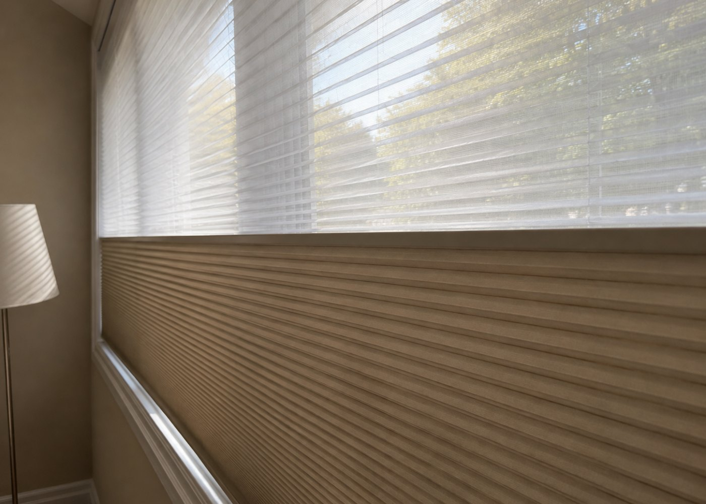

What is a honeycomb blind?
Also called cellular shades, honeycomb blinds are made from pleated fabric bonded into a row of hexagonal cells — look at one from the side and you’ll see the honeycomb shape that gives them their name. Each cell traps a pocket of still air between your window and the room.
That trapped air is the whole point. Still air is a poor conductor of heat, so a honeycomb blind acts like an extra layer of insulation on the glass — the same principle as a down jacket. Of every blind and shade type, cellular shades are consistently the best insulators.
How they work
The fabric is folded accordion-style and glued so the pleats form closed cells. Raise the shade and it stacks flat and small at the top; lower it and the cells open into their full depth. Because there are no slats or cords running through the fabric, the face is smooth and light passes through it evenly — no stripes, no glare lines.
You choose the fabric opacity to set how much light comes through:
- Sheer / light-filtering — a soft, glowing daylight, with daytime privacy.
- Semi-opaque — more shade, still gentle light.
- Blackout — an opaque lining inside the cell for near-total darkness (see below).

Single cell vs. double cell
Single cell shades have one layer of pockets and are the everyday choice — light, slim and effective. Double cell shades nest a second row of cells inside the first, roughly doubling the insulating value and blocking a touch more sound. They’re a little thicker and cost more, so we recommend them for the coldest rooms: big north-facing windows, drafty older Montreal homes, and bedrooms above a garage.
Top-down / bottom-up
This is the honeycomb feature people fall in love with. The shade can be lowered from the top as well as raised from the bottom — so you can let daylight and sky in through the upper part of the window while keeping the lower part covered for privacy. It’s ideal for street-facing rooms and bathrooms. The photo at the top of this page shows exactly that: light through the top, blackout below.

Honest pros and cons
Pros
- Best insulation of any blind — noticeably warmer in winter, cooler in summer, lower bills.
- Soft, even light with no slat lines or glare.
- Top-down / bottom-up privacy without losing daylight.
- Quiet room — the cells absorb some outside noise.
- Stacks very small when raised — you keep the whole view.
- Cordless and motorized options — clean look, child-safe.
- Blackout available for bedrooms and nurseries.
Cons
- Less “decorative” than curtains or Roman shades — a clean, minimal look rather than a statement.
- Cleaning takes care — dust with a soft brush or vacuum on low; not machine-washable.
- Cells can trap insects or dust in the top pleats over years.
- Blackout needs side channels for true darkness (light leaks at the edges otherwise — see our blackout guide).
- Not for high-humidity outdoors — for balconies see outdoor blinds.
At a glance
| Insulation | Best in class |
|---|---|
| Light control | Sheer to full blackout |
| Privacy | Excellent, esp. top-down |
| Style | Clean & minimal |
| Maintenance | Dust / vacuum gently |
| Best rooms | Bedrooms, living rooms, home offices, nurseries, north-facing & large windows |
| Options | Single or double cell · sheer / semi / blackout · top-down/bottom-up · cordless · motorized |
Who they’re perfect for
If your window is cold to stand near in January, this is your blind. Honeycomb shades are the answer for anyone who wants real comfort and lower heating bills without wrapping their windows in heavy curtains. They suit modern and minimalist interiors, and — with top-down/bottom-up — any room that faces the street or a neighbour.
They’re also our go-to for bedrooms and nurseries, where the combination of blackout, insulation and quiet is hard to beat.
Windows are usually the weakest point of a home’s insulation. On a large or older window, a double-cell honeycomb shade can make a room feel a full degree or two warmer at the same thermostat setting — you notice it most on the coldest nights.
When to choose something else
- Want drama, softness or colour on the wall? Look at curtains & drapes or Roman shades.
- Want to flick between privacy and full view many times a day? Day & night (zebra) blinds do that with one pull.
- Need the cheapest clean option for a kitchen or utility room? A roller blind is hard to beat.
Frequently asked questions
Are honeycomb blinds worth it in Montreal?
Yes. Of all blind types, cellular shades do the most to cut heat loss through glass in winter and heat gain in summer. With our long heating season the comfort difference is noticeable — especially on big or north-facing windows.
Single cell or double cell — which should I get?
Single cell for most rooms. Double cell for the coldest windows (large, north-facing, older single-pane) or where you also want a bit more sound dampening.
Can they be fully blackout?
Yes — blackout cellular fabric has an opaque inner lining. For total darkness (nurseries, shift workers, home cinema) pair it with side channels so light can’t leak around the edges.
Are they child-safe?
Yes — we recommend cordless or motorized operation, which removes hanging cords entirely.
How do I clean them?
A soft duster or vacuum brush attachment on low. For marks, a damp (not wet) cloth dabbed gently. Avoid soaking the fabric.
Do you install them?
Yes — professional installation is free and included with every order across Montreal. We measure on site so the fit is exact.